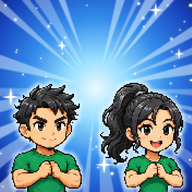
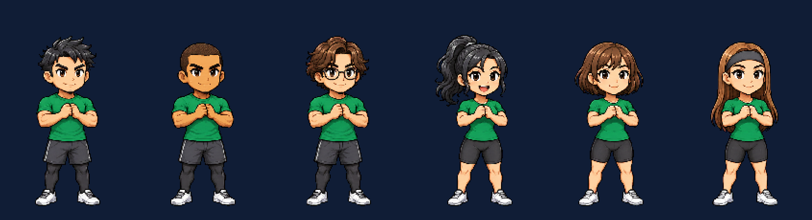

筋トレクエストの はじめかた
筋トレ・食事・体の記録で、ドット絵のキャラがレベルアップする記録アプリです。記録は、あなた自身の Google スプレッドシートに保存されます。
用意するもの
- Google アカウント（Gmail のアカウントで大丈夫です）
- パソコン（最初の準備だけ。15分ほど）
- ふだん使う iPhone や Android

キャラは6人から選べて、服の色も9色から選べます。
1記録用のスプレッドシートを自分用にコピーする
- パソコンで、教えてもらった「ひな形スプレッドシート」のリンクを開く
- 「コピーを作成」を押す。あなたの Google ドライブに、あなた専用のスプレッドシートができます
コピーした中身は、あなたにしか見えません。
2アプリとつなぐ準備（Apps Script）
- コピーしたスプレッドシートで、上のメニューの「拡張機能 → Apps Script」を開く
- 右上の青い「デプロイ」→「新しいデプロイ」を押す
- 左上の歯車 →「ウェブアプリ」を選ぶ
- 「次のユーザーとして実行」は「自分」、「アクセスできるユーザー」は「全員」にして「デプロイ」
- 「アクセスを承認」と出たら、自分のアカウントを選んで許可する
- 完了画面の「ウェブアプリ」の URL（
/execで終わるもの）をコピーして、メモしておく
「このアプリは Google で確認されていません」と出たら、左下の「詳細」→「（安全ではないページ）に移動」→「許可」です。あなた自身のスプレッドシートの中にあるプログラムなので、この表示が出ます。
3合言葉（あいことば）を作る
- Apps Script の画面の上、「実行」ボタンの右の欄で
setupAppKeyを選ぶ - 「実行」を押す
- 下に出る「実行ログ」の
key=から始まる英数字をコピーして、メモしておく
合言葉は、あなたのアプリだけが記録を読み書きするための鍵です。人に教えないでください。
4スマホでアプリを開く
- スマホのブラウザ（iPhone は Safari）で、下のボタンからアプリを開く
- 「さいしょの せってい」に、①ウェブアプリの URL、②合言葉、③あなたの名前を入れて「ほぞんして よみこむ」
- キャラづくりの画面が開くので、好きなキャラと服の色を選ぶ
- iPhone は共有ボタン →「ホーム画面に追加」、Android はメニュー →「ホーム画面に追加」
5さいしょの記録
- まずスプレッドシートの「体組成ログ」に、日付と体重を1回入れてください。懸垂や腕立てふせのような自重の種目は、体重をもとに経験値を計算します
- 筋トレは「ぶい」→「＋ きんトレを きろくする」、食事は「ごはん」→「＋ ごはんを きろくする」から記録できます
- 目標のカロリーやたんぱく質は、スプレッドシートの「ダッシュボード」で変えられます
こまったときは
- 「よみこめませんでした」と出る：①の URL が
/execで終わっているか、②の合言葉が正しいかを確かめてください - 「Load failed」と出て記録できない：手順2のデプロイで「アクセスできるユーザー」が「全員」になっているか確かめてください
- 合言葉を忘れた：手順3をもう一度実行すると新しい合言葉が出ます。アプリの「URLを いれなおす」から入れ直してください
絵や文字の出どころは、アプリの「きろく」→「クレジット」に載っています。